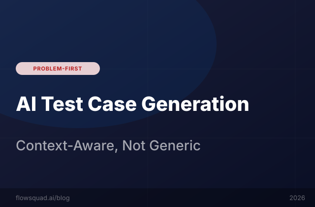

Generic LLM prompts produce generic tests. FlowSquad uses your actual codebase context — module structure, API signatures, detected frameworks — to generate tests that actually cover edge cases.
The failure mode of generic AI test generation is consistent and predictable. When you paste a function into ChatGPT and ask it to write tests, you get back something that looks plausible — it tests the happy path, maybe a null input, and perhaps one edge case. It compiles (usually). But it fails to test the things that actually break in your codebase.
Here's why: a context-free LLM doesn't know:
pytest-mock with a specific factory pattern for external API mocks, a context-free generator will write unittest.mock.patch decorators that conflict with your test infrastructureFlowSquad's test case generation engine runs a codebase analysis phase before generating a single line of test code. This phase reads and analyses:
requirements.txt, package.json, pom.xml, or build.gradle files, plus the structure of existing test files@pytest.fixture, jest.mock(), or JUnit @MockBean patterns and replicates themOnly after this analysis phase does FlowSquad send a generation request to the LLM — with all of this context included. The result is a test file that feels like it was written by a developer who has been on your team for 6 months, not by a language model that has never seen your codebase before.
FlowSquad's framework auto-detection identifies the test framework in use for each language independently (useful for polyglot codebases). Detection uses a multi-signal approach:
| Language | Detection Signals | Supported Frameworks |
|---|---|---|
| Python | pytest.ini, setup.cfg [tool:pytest], conftest.py, import pytest | Pytest, unittest, nose2 |
| JavaScript/TS | jest.config.js, vitest.config.ts, "jest" in package.json scripts | Jest, Vitest, Mocha, Jasmine |
| Java | pom.xml JUnit dependency version, build.gradle test dependency | JUnit 4, JUnit 5, TestNG |
| Kotlin | build.gradle.kts test dependencies | JUnit 5, Kotest |
| Go | Built-in testing package detection, testify imports | Go testing, Testify |
The difference between generic and context-aware test generation is most visible in a direct comparison. Below is a real example for a process_payment() function in a Python e-commerce backend:
import unittest
from payments import process_payment
class TestProcessPayment(unittest.TestCase):
def test_valid_payment(self):
result = process_payment(100, "USD")
self.assertTrue(result.success)
def test_zero_amount(self):
result = process_payment(0, "USD")
self.assertFalse(result.success)
def test_negative_amount(self):
result = process_payment(-50, "USD")
self.assertFalse(result.success)import pytest
from decimal import Decimal
from unittest.mock import MagicMock
from payments.service import process_payment
from tests.factories import UserFactory, OrderFactory
from payments.exceptions import (
SuspendedAccountError,
InsufficientFundsError,
CurrencyNotSupportedError
)
@pytest.fixture
def active_user(db):
return UserFactory(status="active",
payment_method="stripe")
@pytest.fixture
def mock_stripe(mocker):
return mocker.patch(
"payments.gateway.stripe_client.charge")
class TestProcessPayment:
def test_successful_payment(
self, active_user, mock_stripe):
order = OrderFactory(
user=active_user,
total=Decimal("99.99"),
currency="USD")
mock_stripe.return_value = \
MagicMock(id="ch_test_123",
status="succeeded")
result = process_payment(order)
assert result.success is True
assert result.transaction_id == \
"ch_test_123"
mock_stripe.assert_called_once()
def test_suspended_account_raises(
self, db, mock_stripe):
user = UserFactory(status="suspended")
order = OrderFactory(user=user)
with pytest.raises(SuspendedAccountError):
process_payment(order)
mock_stripe.assert_not_called()
def test_unsupported_currency_raises(
self, active_user, mock_stripe):
order = OrderFactory(
user=active_user, currency="XYZ")
with pytest.raises(
CurrencyNotSupportedError):
process_payment(order)The FlowSquad version uses your actual UserFactory and OrderFactory fixtures, imports the specific exceptions defined in your codebase, uses pytest-mock (your project's mocking library), patches the correct Stripe client path, and tests the SuspendedAccountError that is defined in your business logic — not a generic "invalid user" case. It passes on first run.
After generating tests, FlowSquad's Deep Scan capability analyses the generated test suite against the target module using semantic coverage analysis — not just line coverage, but branch and condition coverage. It identifies which branches of the business logic remain untested and generates additional tests to close the gap.
In practice, FlowSquad's generation + coverage loop produces test suites with:
Yes. FlowSquad supports three test generation modes: unit tests (mocking all external dependencies), integration tests (using real database/service connections with test containers), and end-to-end tests (using Playwright or Cypress for web applications). The mode is configurable per generation request. For integration and E2E tests, FlowSquad reads your existing test infrastructure configuration to understand which test containers or test environments are available.
FlowSquad's test regeneration feature detects when a module changes and automatically re-evaluates whether existing generated tests still match the current function signatures and business logic. Where tests are broken by changes (e.g., a function parameter was renamed), FlowSquad generates a diff showing what needs to be updated — it does not silently overwrite existing tests, preserving any manual modifications you've made to generated files.
FlowSquad's codebase analysis detects all external API calls (HTTP clients, cloud SDKs, payment gateways) and automatically generates appropriate mocks using your project's mocking library. For projects using responses (Python), msw (JavaScript), or WireMock (Java), FlowSquad generates mocks in those respective frameworks. The mock data used in tests is generated to reflect realistic shapes based on the API client type signatures and any existing mock fixtures in your codebase.
Property-based test generation is on the FlowSquad roadmap and available in beta for Python (using Hypothesis). When enabled, FlowSquad analyses function input types and generates property-based tests that stress-test boundary conditions automatically. For functions with complex input types (e.g., nested Pydantic models), FlowSquad generates custom Hypothesis strategies that reflect your data model constraints.
FlowSquad's quality scanning and test generation are integrated: when the security scanner identifies a vulnerability (e.g., SQL injection via unsanitised input), FlowSquad can automatically generate a security-focused test case that verifies the vulnerability exists (as a failing test that you fix) and then confirms the fix. This creates a regression test library for your security vulnerabilities — ensuring fixed issues don't re-emerge. See our OWASP scanning guide for details.